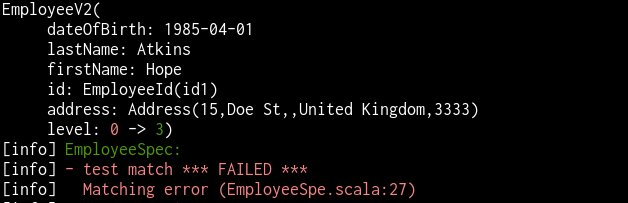

without hurting your eyes
Jacob Wang
final case class Employee(
id: EmployeeId,
firstName: String,
lastName: String,
addresses: List[Address],
dateOfBirth: LocalDate,
// ...probably 10 other fields
)final case class Address(
streetNumber: String,
line1: String,
line2: String,
country: String,
postCode: String,
verified: Boolean
)It can’t be that bad…right?
val updatedEmployee = employee.copy(
addresses = employee.addresses.map(
a => a.copy(verified = true)
)
)or worse…
employee.copy(
company = employee.company.copy(
address = employee.company.address.copy(
street = employee.company.address.street.copy(
name = employee.company.address.street.name.capitalize
)
)
)
)Can we do better?
import com.softwaremill.quicklens._
employee.modify(_.addresses.each.country).setTo("Kingdom")
// res2: Employee = Employee(
// EmployeeId("id1"),
// "Hope",
// "Atkins",
// List(
// Address("15", "Candy Lane", "", "Kingdom", "3333", false),
// Address("50", "Donut St", "", "Kingdom", "3333", false)
// ),
// 1985-04-01
// )sealed trait Animal
case class Dog(age: Int) extends Animal
case class Cat(ages: List[Int]) extends Animal
case class Zoo(animals: List[Animal])
val zoo = Zoo(List(Dog(4), Cat(List(1,2,3,4,5,6,7,8,9))))val olderZoo = zoo.modifyAll(
_.animals.each.when[Dog].age,
_.animals.each.when[Cat].ages.at(0)
).using(_ + 1)
// olderZoo: Zoo = Zoo(List(Dog(5), Cat(List(2, 2, 3, 4, 5, 6, 7, 8, 9))))… and support for more types like Either and Map!
import io.scalaland.chimney.dsl._
val employeeV2 = employee.into[EmployeeV2]
.withFieldComputed(_.level, _ => calculateLevel())
.transform
// employeeV2: EmployeeV2 = EmployeeV2(
// EmployeeId("id1"),
// "Hope",
// "Atkins",
// List(
// Address("15", "Candy Lane", "", "United Kingdom", "3333", false),
// Address("50", "Donut St", "", "United Kingdom", "3333", false)
// ),
// 1985-04-01,
// 3
// )If we forgot to provide value for a missing field…
level: scala.Int - no accessor named level in source type repl.Session.App1.EmployeeEmployeeV2(EmployeeId(id1),Hope,Atkins,Address(15,Doe St,,United Kingdom,3333),1985-04-01,0) was not equal to EmployeeV2(EmployeeId(id1),Hope,Atkins,Address(15,Doe St,,United Kingdom,3333),1985-04-01,3)